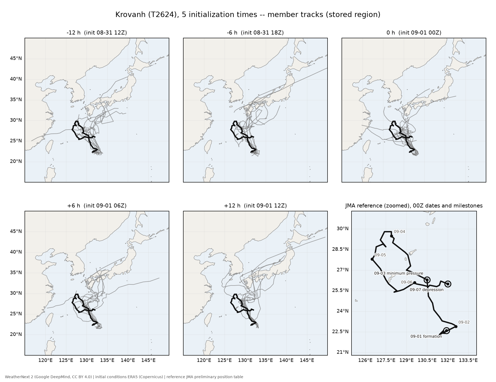
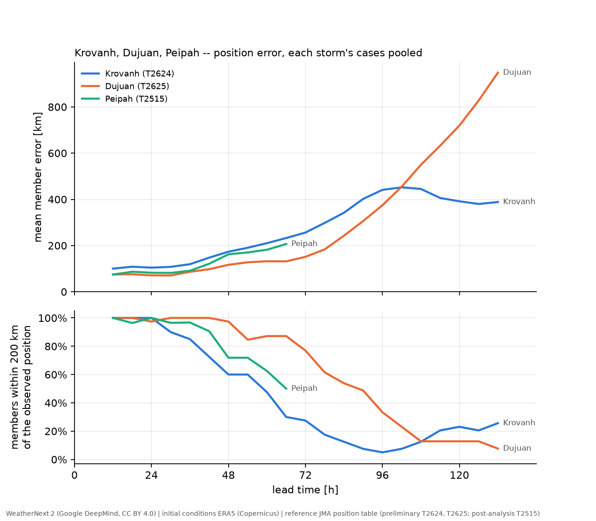
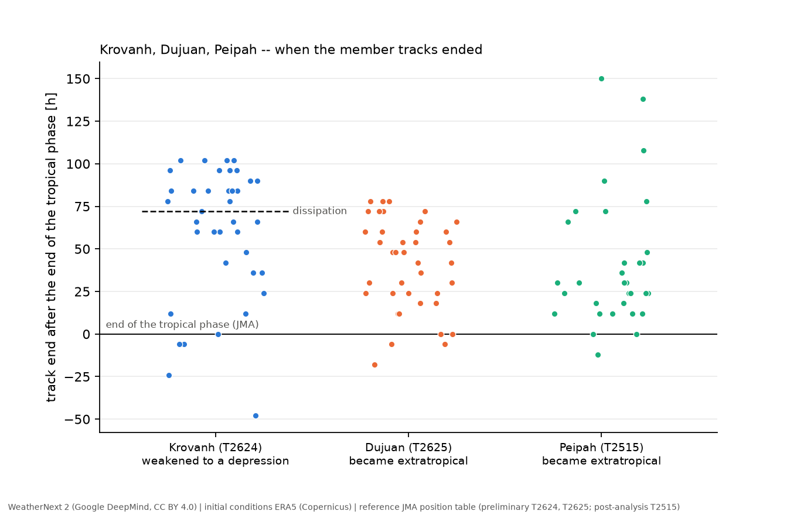

<!-- .slide: class="title-slide" data-chapter="はじめに" --> <div class="title-plate"> <img class="title-art" src="assets/images/title.png" alt="地球儀の上の台風を指さす少女の水彩画"> <div class="title-band"> <h1>天気予報AIは迷走台風を予測できるか？</h1> <div class="title-sub"> <p class="subtitle">〜沖縄を迷走した台風 24 号クロヴァンを追う〜</p> <p class="byline">さめ ・ VRChat 物理学集会</p> </div> </div> </div> --- ### 自己紹介 <div class="profile-container"> <div class="profile-left"> * さめ(мег-сск) * ⚛️ VRChat物理学集会の主催 * 🧑🎓 社会人学生として通信制大学在学中 * 得意分野: * 📸 コンピュータビジョン (画像認識/点群処理) * 🌍 空間情報処理 (地理情報/リモートセンシング) * ☁️ クラウドインフラ設計/IaC (AWS, GCP) * 学生時代は地球物理学を専攻 * 地球観測技術のエンジニアとして活動中 </div> <div class="profile-right"> <img src="assets/images/icon_circle.png" alt="avatar" height="350px" width="350px"> </div> </div> --- ### AI が天気を予報する時代 <div class="simple-box"> * **機械学習の天気予報モデル**が出てきた * 例: NVIDIA の FourCastNet ([以前の物理学集会](https://vrc-ta-hub.com/event/detail/645/)で紹介)、Microsoft の Aurora、Google DeepMind の **WeatherNext 2** (今回) * 方程式を解くかわりに、過去の大気のデータから**「6 時間後」を学習** * GPU 1 枚で、10 日先までの予報が **1 本 約 3 分** </div> <div class="highlight-box"> じゃあ、**一番やっかいな台風**でも当たるの？ 自分で試してみた </div> Note: 「方程式を解くかわりに」は、数値予報との違いを一言で言うため。モデルの中身には立ち入らない。 --- ### 台風 24 号クロヴァン (2026) <div class="two-column"> <div class="column-left dense"> <div class="simple-box"> * メディアで「**迷走台風**」と呼ばれた (沖縄付近をウロウロ) * 09-01 00Z、沖縄の南東の海上で台風に * 最低気圧 985 hPa (09-03) * 北へ進み、**最北点で引き返してループ** * 一生を北緯 22–30°、東経 126–133° の中で過ごした * 進む速さは中央値 **14 km/h** (自転車くらい) * 09-07 に熱帯低気圧へ、09-10 に消滅 </div> <p class="caption">時刻はすべて UTC (日本時間は +9 時間)</p> </div> <div class="column-right"> <div class="figure-crop figure-crop-2d" style="width: 400px; aspect-ratio: 1 / 1;"><p></p></div> <p class="credit">気象庁「台風位置表」(速報値) を加工して作成</p> </div> </div> --- ### 台風はなぜ迷走するのか <div class="simple-box"> * 台風は自分で進むのではなく、**周りの大きな風 (指向流) に流される** * 教科書の経路: 太平洋高気圧のへりを回って北上し、偏西風に乗って北東へ * 指向流が弱いと、行き先が決まらず**迷走**する </div> <br> <div class="highlight-box"> クロヴァンも、指向流が弱いところで止まった**のかもしれない** (※ 今回は未検証) </div> --- ### AI に針路予測をさせてみた <div class="two-column"> <div class="column-figure"> <div class="figure-crop" style="width: 500px; aspect-ratio: 1360 / 1075;"><img src="assets/images/krovanh-members-osm-init-2026-09-01T00.png" style="margin-top: -9.19%;"></div> <p class="caption small">赤: 気象庁の経路 / 灰: WeatherNext 2 の 8 本<br>(09-01 00Z から予報)</p> </div> <div class="column-text"> <div class="highlight-box"> * **実際の「迷走」は再現されない** * 北へ抜ける組と大陸へ向かう組に割れた </div> </div> </div> Note: ここで「外れた」と言い切らない。この先で「何がどう外れたか」を測っていく。 --- ### 今日の問い <div class="simple-box"> 1. これは **AI モデルの限界**？ それとも **クロヴァンが難しかった**だけ？ 2. 「外れ方」をどう測れば、**台風どうしを比べられる**か？ </div> <br> <div class="highlight-box"> 答えるために、**教科書どおりに北上して転向した台風 2 つ**で同じ実験をして、対照にした </div> --- <!-- .slide: data-chapter="実験のしかた" --> ### 天気予報 = 初期値 + モデル <div class="simple-box dense"> * **初期値: ERA5** (欧州中期予報センターの再解析データ) * 過去の観測を総動員して作り直した、地球の大気の状態 * 約 31 km (0.25° の格子で配布)、1 時間ごと * **モデル: WeatherNext 2** (Google DeepMind) * 0.25° (約 25 km) の格子、6 時間 × 40 回 = **10 日先まで** * 学習は 2024 年まで。今日の台風はどれも**学習の外** * 後継の WeatherNext 3 (2026-09 発表) は予報サービスとしての提供で、モデルは非公開 </div> <div class="highlight-box dense"> * 初期値は「後から観測を集めて作った状態」 * **実際の予報の腕試しではなく**、「状態がよく分かっていたら、どこまで先を読めるか」(予測可能性) の実験 </div> Note: ERA5 の速報版 (ERA5T) を使っている。ARCO-ERA5 は数か月遅れるので使えなかった。 --- ### アンサンブル: 1 回の予報で 8 本 <div class="simple-box"> * 天気予報は初期値鋭敏: 小さな違いが数日で大きく育つ * WeatherNext 2 はモデルの中に**ノイズ**を入れて、同じ初期値から**少しずつ違う未来**を出す * 8 本の**ばらつき = 予報の自信のなさ** </div> <br> <div class="highlight-box"> 今回は 8 本とも**初期値は同じ ERA5**。ばらつきはゼロから育つので、実際の誤差より小さめに出る (Appendix) </div> --- ### 何を走らせたか <div class="results-box dense nowrap-first"> <table> <tr><th></th><th>クロヴァン (T2624)</th><th>ドゥージェン (T2625)</th><th>ペイパー (T2515)</th></tr> <tr><td>役割</td><td>主役</td><td>対照: 同じ年・同じ手順、<br>教科書どおりの転向</td><td>対照: 同じくらいの強さ、<br>同じ海域、同じ時期</td></tr> <tr><td>最低気圧</td><td>985 hPa</td><td>960 hPa</td><td>992 hPa</td></tr> <tr><td>予報の開始</td><td>台風になった時刻の前後 12 h</td><td>台風になった時刻の前後 12 h</td><td>最初の熱帯低気圧の前後 12 h</td></tr> <tr><td>比べる範囲</td><td>熱帯低気圧に弱まるまで</td><td>温帯低気圧に変わるまで</td><td>温帯低気圧に変わるまで</td></tr> <tr><td>答え合わせ</td><td>気象庁 速報値</td><td>気象庁 速報値</td><td>気象庁 確定値</td></tr> </table> </div> <div class="highlight-box dense"> 3 個 × 開始時刻 5 つ (6 時間おき) × 8 本 = **120 本の 10 日予報** </div> Note: ペイパーは台風だった期間が 42 時間しかないので、開始時刻を最初の熱帯低気圧に合わせた。 --- ### 対照の 2 つ <div class="two-column"> <div class="column-right"> <div class="figure-crop figure-crop-2d" style="width: 290px; aspect-ratio: 405 / 485;"><img src="assets/images/wiki/2026-10-17-dujuan-tracks.png" style="width: 454.32%; margin-left: -322.22%; margin-top: -159.26%;"></div> <p class="caption small">ドゥージェン: 北上して 09-20 に北東へ転向。<br>伊豆諸島を抜けて 09-22 に温帯低気圧</p> </div> <div class="column-right"> <div class="figure-crop figure-crop-2d" style="width: 340px; aspect-ratio: 502 / 440;"><img src="assets/images/wiki/2026-10-17-peipah-tracks.png" style="width: 366.53%; margin-left: -249.0%; margin-top: -115.54%;"></div> <p class="caption small">ペイパー (2025 年): 北北西から転向して<br>九州・四国・東海を横切り、09-05 に温帯低気圧</p> </div> </div> <p class="credit">気象庁「台風位置表」(ドゥージェン: 速報値、ペイパー: 確定値) を加工して作成</p> --- ### 台風の中心をどう追うか <div class="simple-box"> * WeatherNext 2 に**付属の追跡プログラム**をそのまま使う (自作しない) * 6 時間ごとに**閉じた渦**を見つけて、つないで経路にする * 観測の位置は**一切渡さない**: モデルが自分で台風を生む * 台風になった時刻に観測に一番近い渦を、その台風とする </div> <div class="highlight-box"> 追跡プログラムが追うのは「台風」ではなく「**渦**」(あとで効いてくる) </div> Note: 観測の位置を渡しても 6 時間後以降の経路は変わらなかった。渡すと 2.5 日未満の経路を消すフィルタが外れるので、全ケース渡さないことにした。 --- <!-- .slide: data-chapter="結果 1: 割れた経路" --> ### 結果 1: クロヴァンの 5 回の予報 <p class="caption">黒: 気象庁 / 灰: 各回 8 本。右下: 観測の拡大 (日付は 00Z)</p> --- ### そして誰もループしない <div class="simple-box"> * 40 本の行き先: **北 30 本**、大陸 4 本、東 1 本、観測の範囲内 5 本 * 北の組の大半は九州・本州へ * しかし**朝鮮半島へ向かったものも 3 本ほど** * 実際に観測されたループを再現したメンバーは **0 本** * 予報の開始を 6 時間ずつずらしても、傾向は同じ </div> <br> <div class="highlight-box"> 最初の 2 日の誤差は 70–120 km。ERA5 自身の台風の位置のずれ (23–110 km) と同じくらい </div> Note: 「開始が遅いほど良くなる」という単調な傾向もない。8 本・1 台風では、開始時刻の効果は解析のノイズに埋もれる。朝鮮半島の 3 本は図から目で数えた値 (行き先の表は NAS とともに失われた): 09-01 12Z 開始の 2 本が半島の西岸と南岸に届き、09-01 00Z 開始の 1 本は済州島の西で北上中に途切れる。行き先の「北」は観測の箱の北辺から出たという意味で、朝鮮半島へ向かった組も含む。 --- ### 「平均」の罠 <div class="two-column"> <div class="column-figure"> <svg class="diagram" viewBox="0 0 600 330" width="620" xmlns="http://www.w3.org/2000/svg" font-family="sans-serif"> <defs><marker id="arrow-mean" viewBox="0 0 10 10" refX="9" refY="5" markerWidth="7" markerHeight="7" orient="auto-start-reverse"><path d="M 0 0 L 10 5 L 0 10 z" fill="#777"/></marker></defs> <path d="M 300 310 C 310 240, 360 160, 470 40" fill="none" stroke="#777" stroke-width="3" marker-end="url(#arrow-mean)"/> <path d="M 300 310 C 320 230, 390 170, 510 70" fill="none" stroke="#777" stroke-width="3" marker-end="url(#arrow-mean)"/> <path d="M 300 310 C 280 250, 200 200, 80 150" fill="none" stroke="#777" stroke-width="3" marker-end="url(#arrow-mean)"/> <path d="M 300 310 C 290 260, 230 230, 100 190" fill="none" stroke="#777" stroke-width="3" marker-end="url(#arrow-mean)"/> <path d="M 300 310 C 300 250, 290 190, 285 110" fill="none" stroke="#B9531D" stroke-width="4" stroke-dasharray="10 7"/> <path d="M 300 310 C 300 230, 330 170, 290 150 C 240 125, 250 190, 300 175" fill="none" stroke="#2E2A24" stroke-width="4"/> <text x="455" y="185" font-size="24" fill="#6A5A48">北の組</text> <text x="30" y="240" font-size="24" fill="#6A5A48">大陸の組</text> <text x="250" y="95" font-size="24" fill="#B9531D" text-anchor="middle">平均 (誰も通っていない)</text> <text x="244" y="136" font-size="24" fill="#2E2A24" text-anchor="end">観測のループ</text> </svg> </div> <div class="column-text"> <div class="simple-box dense"> * 8 本を平均すると、2 つの組のあいだ = **観測のループのあたり**を通る * 台風になった時刻からの予報: 120 時間後の**平均の位置の誤差 50 km**、1 本ずつの誤差の平均は 170 km * 双峰分布の平均は、どちらの山でもない谷にある </div> </div> </div> Note: だから比較の図にはアンサンブル平均の経路を描かない。かわりに「200 km 以内にいる本数」と「行き先」を数える。 --- ### 対照 1: ドゥージェン <div class="two-column"> <div class="column-figure"> <img class="figure" src="assets/images/wiki/2026-10-17-dujuan-tracks.png" height="440px"> </div> <div class="column-text"> <div class="highlight-box"> 転向まで、ほぼ全員が観測の経路をなぞる。転向後は北東に扇形に広がる </div> </div> </div> --- ### 対照 2: ペイパー <div class="two-column"> <div class="column-figure"> <img class="figure" src="assets/images/wiki/2026-10-17-peipah-tracks.png" height="404px"> </div> <div class="column-text"> <div class="highlight-box"> 北北西からの転向も再現。日本の上では観測の経路とその北に広がる </div> </div> </div> Note: 見た目では、対照の 2 つはクロヴァンよりずっと良い。では数字では？ --- <!-- .slide: data-chapter="結果 2・3: 外れ方を測る" --> ### 結果 2: 距離の誤差で比べると <div class="two-column"> <div class="column-figure"> <div class="figure-crop" style="width: 600px; aspect-ratio: 1280 / 1030;"><p></p></div> </div> <div class="column-text"> <div class="highlight-box"> 台風の針路を予測できていそうに見えるドゥージェンのほうが、100 時間より先では**クロヴァンよりも位置の誤差が大きい** </div> </div> </div> Note: 上: 1 本ずつの誤差の平均 (5 回分をまとめて、クロヴァン 40 本、ドゥージェン 39 本、ペイパー 32 本まで)。下: 観測の位置から 200 km 以内にいる割合。72 時間ではペイパー (257 km) とクロヴァン (256 km) が並ぶ。 --- ### 速い台風では「時間の遅れ」が距離の誤差になる <div class="two-column"> <div class="column-figure"> <svg class="diagram" viewBox="0 0 800 340" width="680" xmlns="http://www.w3.org/2000/svg" font-family="sans-serif"> <path d="M 40 290 C 200 250, 260 230, 300 222 S 420 175, 470 150 S 650 60, 770 40" fill="none" stroke="#2E2A24" stroke-width="5"/> <line x1="300" y1="222" x2="470" y2="150" stroke="#B9531D" stroke-width="3" stroke-dasharray="8 6"/> <line x1="300" y1="222" x2="239" y2="48" stroke="#2367B8" stroke-width="3" stroke-dasharray="8 6"/> <circle cx="300" cy="222" r="11" fill="#2E2A24"/> <circle cx="470" cy="150" r="11" fill="#B9531D"/> <circle cx="239" cy="48" r="11" fill="#2367B8"/> <text x="310" y="270" font-size="29" fill="#2E2A24">観測の台風 (時刻 t)</text> <text x="310" y="306" font-size="29" fill="#6A5A48">どちらも 300 km</text> <text x="486" y="196" font-size="28" fill="#B9531D">A: 道の上、6 時間先行</text> <text x="262" y="42" font-size="29" fill="#2367B8">B: 別の道</text> <text x="40" y="330" font-size="29" fill="#2E2A24">観測の経路</text> </svg> </div> <div class="column-text"> <div class="simple-box dense"> * 時速 50 km の台風で 6 時間早ければ、それだけで **300 km** の「誤差」 * ドゥージェンとペイパーは転向後に時速 35–52 km、クロヴァンは中央値 14 km </div> <div class="highlight-box dense"> km の誤差では、正しい道を早すぎる・遅すぎるペースで進む予報と、道を外れた予報を区別できない </div> </div> </div> --- ### 結果 3: 「道」と「時計」に分ける <div class="two-column"> <div class="column-figure"> <svg class="diagram" viewBox="0 0 680 360" width="680" xmlns="http://www.w3.org/2000/svg" font-family="sans-serif"> <polyline points="20,330 230,262 440,170 640,60" fill="none" stroke="#2E2A24" stroke-width="5" stroke-linejoin="round" stroke-linecap="round"/> <line x1="275" y1="79" x2="335" y2="216" stroke="#2367B8" stroke-width="3" stroke-dasharray="9 7"/> <circle cx="230" cy="262" r="11" fill="#2E2A24"/> <circle cx="275" cy="79" r="11" fill="#2367B8"/> <circle cx="335" cy="216" r="8" fill="#fff" stroke="#2E2A24" stroke-width="3"/> <text x="298" y="86" font-size="24" font-weight="700" fill="#2367B8">予報 (時刻 t)</text> <text x="280" y="156" font-size="24" fill="#2367B8" text-anchor="end">道からの距離</text> <text x="356" y="246" font-size="24" fill="#2E2A24">最寄り点:</text> <text x="356" y="276" font-size="24" fill="#2E2A24">観測が通ったのは t + 6 h</text> <text x="210" y="316" font-size="24" font-weight="700" fill="#2E2A24">観測 (時刻 t)</text> <text x="540" y="174" font-size="24" fill="#2E2A24">観測の経路</text> </svg> </div> <div class="column-text"> <div class="simple-box dense"> * **道**: 予報の位置から観測の経路までの最短距離。200 km 以内なら「道の上」 * **時計**: 最寄り点を観測の台風が通った時刻 − 予報の時刻。<b>+ なら先行</b> (この例は +6 h) * 経路の端より先に行った位置は、道を外れたとは数えず別に数える </div> </div> </div> Note: 進行方向に沿った「前後・左右」に分ける普通のやり方は、ループで向きが回るクロヴァンには使えない。200 km は 18 枚目の「観測の位置から 200 km 以内」と同じ値で、予報の早い段階の誤差と同じくらいの大きさ。台風についていけているかどうかを分ける線で、良いメンバーとより良いメンバーを分ける線ではない。距離と時計の定義には入らず、「道の上」を数えるときと、時計をまとめるメンバーを選ぶときだけに使う。 --- ### 道と時計で見ると <div class="two-column"> <div class="column-figure"> <div class="figure-crop" style="width: 520px; aspect-ratio: 1280 / 1030;"><img src="assets/images/wiki/2026-10-17-road-and-clock.png" style="margin-top: -7.03%;"></div> <p class="caption small">上: 道の上にいる割合<br>下: 道の上のメンバーの時計 (中央値と四分位、+ = 先行)</p> </div> <div class="column-text"> <div class="simple-box dense"> * クロヴァンの時計は**ループの始まり**まで * 最北点 29.8°N 127.4°E、09-04 06Z * ループする経路は**自分と交差する**。数日離れた 2 回の通過が、同じくらい近くなる * 道からの距離は経路全体で測る (ループは面を覆うので甘め) </div> </div> </div> --- ### 3 つの台風、3 つの外れ方 <div class="results-box dense nowrap-first"> <table> <tr><th></th><th>道</th><th>時計</th></tr> <tr><td>ドゥージェン</td><td>96 h でも 39 本中 38 本が道の上</td><td>転向後に <b>+14 h</b> (96 h、38 本中 31 本が先行)</td></tr> <tr><td>クロヴァン</td><td>66 h まで全員 → 停滞の時刻 (72–90 h) に約 6 割へ</td><td>ループの前から <b>8–12 h 遅れ</b> (Appendix)</td></tr> <tr><td>ペイパー</td><td>66 h で 27 本中 22 本</td><td><b>±3 h</b> 以内</td></tr> </table> </div> <div class="highlight-box dense"> * ドゥージェンの大きな km 誤差は、ほとんど**時計のずれ** (半日早く転向・加速) * 道は合っていても、着く時刻が半日ずれた (実際の予報なら、備える時刻を誤らせる外れ方) * クロヴァンは**道そのものが割れた** </div> --- <!-- .slide: data-chapter="結果 4: 停滞を測る" --> ### 結果 4: 停滞とは何か <div class="simple-box"> * 「止まった」台風も、実際は**ふらふら動いている** * 速さで決めると、「遅いがまっすぐ」と「その場でうろうろ」を区別できない * 見たいのは**向きがそろっているか** </div> <br> <div class="highlight-box"> * 流れに浮かぶ粒子: 流れに乗って進む (**ドリフト**) か、ランダムに揺れる (**拡散**) か。 * その比が **Péclet 数** (移流と拡散のどちらが優位か？) </div> --- ### 台風の経路の Péclet 数 <div class="two-column"> <div class="column-figure"> <svg class="diagram" viewBox="0 0 600 260" width="600" xmlns="http://www.w3.org/2000/svg" font-family="sans-serif"> <defs><marker id="arrow-pe" viewBox="0 0 10 10" refX="9" refY="5" markerWidth="5" markerHeight="5" orient="auto-start-reverse"><path d="M 0 0 L 10 5 L 0 10 z" fill="#2367B8"/></marker></defs> <polyline points="30,190 108,163 190,143 268,113 345,88" fill="none" stroke="#2367B8" stroke-width="4" stroke-linejoin="round" stroke-linecap="round" marker-end="url(#arrow-pe)"/> <line x1="30" y1="190" x2="345" y2="88" stroke="#B9531D" stroke-width="3" stroke-dasharray="9 7"/> <polyline points="400,150 490,95 540,185 450,200 505,118" fill="none" stroke="#2367B8" stroke-width="4" stroke-linejoin="round" stroke-linecap="round" marker-end="url(#arrow-pe)"/> <line x1="400" y1="150" x2="505" y2="118" stroke="#B9531D" stroke-width="3" stroke-dasharray="9 7"/> <line x1="20" y1="23" x2="64" y2="23" stroke="#B9531D" stroke-width="3" stroke-dasharray="9 7"/> <text x="74" y="32" font-size="24" fill="#B9531D">正味の移動</text> <text x="190" y="246" font-size="24" font-weight="700" fill="#2E2A24" text-anchor="middle">Pe 大: 向きがそろう</text> <text x="470" y="246" font-size="24" font-weight="700" fill="#2E2A24" text-anchor="middle">Pe 小: うろうろ</text> </svg> </div> <div class="formula-box"> $$ \mathrm{Pe} = \dfrac{\left\lvert \sum\limits_{i=1}^{n} \Delta \mathbf{x}_{i} \right\rvert^{2}}{\sum\limits_{i=1}^{n} \left\lvert \Delta \mathbf{x}_{i} - \overline{\Delta \mathbf{x}} \right\rvert^{2}} $$ </div> </div> <div class="simple-box dense"> * 分子: 窓のあいだの**正味の移動** (ドリフト) の 2 乗 * 分母: 6 時間ごとの歩幅の**ばらつき** (拡散)。同じ歩幅から測るので、拡散係数を外から持ち込まない </div> Note: Péclet 数と呼ぶ理由: 一定のドリフトに拡散が乗った動きなら、分子と分母の期待値の比は古典的な Péclet 数 UL/D の単調関数になる (Appendix)。期待値の比であって、比の期待値ではない。 --- ### 仮定を足さない (1): 何と比べるか <div class="simple-box dense"> * 「Pe がいくつなら停滞」という線は引かない (線を引くと「台風はこう動くはず」という仮定が入る) * → **同じ時刻・同じ長さの窓での、観測の台風の Pe** と比べる: $\log_{10} (\mathrm{Pe}^{\mathrm{member}} / \mathrm{Pe}^{\mathrm{obs}})$ * 0: 観測と同じ / +1: メンバーの Pe が観測の 10 倍 (よりまっすぐ) / −1: 1/10 (よりうろうろ) * Pe は 2 乗どうしの比 = 信号 (ドリフト) と雑音 (揺らぎ) の**パワーの比**。だから比の $\log_{10}$ は **dB と同じ読み方**: +1 は +10 dB * 対数にすると、10 倍と 1/10 が 0 を挟んで**対称**になる </div> <div class="highlight-box dense"> 比なので、値が動いたのが**メンバーか観測か**は、両方を見て読む </div> Note: Pe = n × (歩幅の平均の 2 乗 / 歩幅の分散) で、1 歩あたりの信号と雑音の比 (SNR) の n 倍。同じ窓で比べると n が消えて、比は SNR の比になる。2 乗の量の比なので 10 log10 が dB (振幅の比なら 20 log10)。スライドの値に単位を付けるならベルで、10 倍すると dB。対数にしないと、まっすぐ側は 1 から無限大まで伸び、うろうろ側は 0〜1 に押し込まれて、白を真ん中にした色の帯が使えない。図の色は ±1 (10 倍) で振り切れる。ランダムウォークなら Pe ≈ n/(n−1) (4 歩で 1.33) だが、台風はランダムウォークではないので基準にしない (Appendix)。この値は位置を見ていない。観測から遠く離れたメンバーでも、同じくらいまっすぐ動いていれば 0 になる。 --- ### 仮定を足さない (2): 窓の長さ <div class="simple-box dense"> * 窓の長さを 1 つに決める = **「何時間とどまったら停滞か」を測る側が決める**こと * 同じ時刻でも、窓の長さで答えが変わる * 09-04 00Z のクロヴァン: 18 時間の窓で Pe 0.2 (うろうろ)、48 時間の窓で 2.3 (向きがそろう) * 停滞は約 1 日、ループは約 2 日。現象ごとに効く長さが違う * 9 月に一度つまずいた: 「24 時間で 300 km 未満なら停滞」と決め打ちしたら、**遅いがまっすぐ**な動きまで停滞に数えていた (→「外れた仮説」) </div> <div class="highlight-box dense"> 1 つに決めず、**18〜36 時間の窓を全部並べて**、窓の長さによらない特徴だけを読む </div> Note: 下限の 18 時間は、ばらつきを 3 歩以上から測れる最短の窓。2 歩 (12 時間) だと、ばらつきは 2 つの歩幅の差 1 つだけで決まってしまう。データから窓を自動で選ぶ方法 (Pe の時間変化の折れ目を読む) も試したが、どの時刻でも 12 時間に張り付いて使えなかった。上限の 36 時間は区切りで決めたもので、物理的な根拠はない。ループ (約 2 日) と同じ長さの窓は並べていない。 --- ### スカログラムの読み方 <div class="two-column"> <div class="column-figure"> <svg class="diagram" viewBox="-40 0 840 380" width="600" xmlns="http://www.w3.org/2000/svg" font-family="sans-serif"> <line x1="120" y1="58" x2="760" y2="58" stroke="#999" stroke-width="2"/> <g fill="#6A5A48"><circle cx="140" cy="58" r="5"/><circle cx="180" cy="58" r="5"/><circle cx="220" cy="58" r="5"/><circle cx="260" cy="58" r="5"/><circle cx="300" cy="58" r="5"/><circle cx="340" cy="58" r="5"/><circle cx="380" cy="58" r="5"/><circle cx="420" cy="58" r="5"/><circle cx="460" cy="58" r="5"/><circle cx="500" cy="58" r="5"/><circle cx="540" cy="58" r="5"/><circle cx="580" cy="58" r="5"/><circle cx="620" cy="58" r="5"/><circle cx="660" cy="58" r="5"/><circle cx="700" cy="58" r="5"/><circle cx="740" cy="58" r="5"/></g> <text x="110" y="68" font-size="34" fill="#6A5A48" text-anchor="end">6 h ごと</text> <line x1="360" y1="40" x2="360" y2="150" stroke="#2E2A24" stroke-width="2" stroke-dasharray="5 4"/> <text x="360" y="32" font-size="34" fill="#2E2A24" text-anchor="middle">中心の時刻</text> <path d="M 300 78 L 300 88 L 420 88 L 420 78" fill="none" stroke="#1b7837" stroke-width="4"/> <text x="432" y="98" font-size="34" fill="#1b7837">18 h の窓 (3 歩)</text> <path d="M 240 122 L 240 132 L 480 132 L 480 122" fill="none" stroke="#762a83" stroke-width="4"/> <text x="492" y="142" font-size="34" fill="#762a83">36 h の窓 (6 歩)</text> <g fill="#FCF8F0" stroke="#D9CBB0" stroke-width="1"> <rect x="120" y="160" width="640" height="44"/><rect x="120" y="204" width="640" height="44"/><rect x="120" y="248" width="640" height="44"/><rect x="120" y="292" width="640" height="44"/> </g> <g stroke="#D9CBB0" stroke-width="1"><line x1="160" y1="160" x2="160" y2="336"/><line x1="200" y1="160" x2="200" y2="336"/><line x1="240" y1="160" x2="240" y2="336"/><line x1="280" y1="160" x2="280" y2="336"/><line x1="320" y1="160" x2="320" y2="336"/><line x1="360" y1="160" x2="360" y2="336"/><line x1="400" y1="160" x2="400" y2="336"/><line x1="440" y1="160" x2="440" y2="336"/><line x1="480" y1="160" x2="480" y2="336"/><line x1="520" y1="160" x2="520" y2="336"/><line x1="560" y1="160" x2="560" y2="336"/><line x1="600" y1="160" x2="600" y2="336"/><line x1="640" y1="160" x2="640" y2="336"/><line x1="680" y1="160" x2="680" y2="336"/><line x1="720" y1="160" x2="720" y2="336"/></g> <rect x="340" y="292" width="40" height="44" fill="none" stroke="#1b7837" stroke-width="4"/> <rect x="340" y="160" width="40" height="44" fill="none" stroke="#762a83" stroke-width="4"/> <g font-size="34" fill="#6A5A48" text-anchor="end"><text x="110" y="193">36 h</text><text x="110" y="237">30 h</text><text x="110" y="281">24 h</text><text x="110" y="325">18 h</text></g> <text x="440" y="374" font-size="34" fill="#6A5A48" text-anchor="middle">窓の中心の時刻 → (6 時間ずつずらす)</text> </svg> </div> <div class="column-text"> <div class="simple-box dense"> * **1 マス = 1 つの窓** (横: 中心の時刻、縦: 窓の長さ) * 色: そのマスの $\log_{10} (\mathrm{Pe}^{\mathrm{member}} / \mathrm{Pe}^{\mathrm{obs}})$ の全メンバーの中央値 * <span style="color: #2166ac;"><b>青</b></span>: メンバーのほうがまっすぐ / <span style="color: #b2182b;"><b>赤</b></span>: メンバーのほうがうろうろ / 白: 観測と同じ * **縦に同じ色が続く** = 窓の長さによらない。1 段だけの色 = その長さでだけ見える揺れ </div> </div> </div> Note: 名前はウェーブレット解析の「時刻 × スケール」の図 (スカログラム) から借りた。本来はウェーブレット変換の係数を描く図。ここではウェーブレットではなく、長さの違う移動窓を同じ並べ方で描いている。パラメータを 1 つ選ぶかわりに、パラメータへの依存性ごと見せるための図。 --- ### 停滞のスカログラム <img class="figure" src="assets/images/wiki/2026-10-19-directedness.png" height="440px"> <p class="caption">色: その窓に値がある全メンバー (5 回 × 8 本) の中央値。赤: メンバーのほうがうろうろ / 青: まっすぐ</p> Note: 値があるメンバーが 40 本の半数に満たない窓は描いていない。両端が階段状に欠けているのは、長い窓ほど中心を端に寄せられないため。クロヴァンの 09-04 の濃い青は「メンバーがとてもまっすぐ」ではなく、「嵐が止まって観測の Pe が小さくなったのに、メンバーはまっすぐのまま」という意味 (25 枚目: 比なので、値が動いたのがメンバーか観測かは両方を見て読む)。 --- ### 嵐が止まった日、メンバーは走っていた <div class="simple-box dense"> * **クロヴァン**: 09-04 12Z までは**ほぼ青** (メンバーのほうがまっすぐ)、09-04 18Z からは**赤** (30 マス中 28、メンバーの中央値 69% が観測を下回る) * 嵐が止まった 09-04 にメンバーは進み続け、**嵐が動き出してから鈍った** * **ドゥージェン**: ほぼ観測どおり。曲線を重ねるずれは −12〜−18 h = 時計と同じ「半日早い」 * **ペイパー**: まっすぐな北上 (09-03〜04) で、メンバーのほうがうろうろ </div> <br> <div class="highlight-box dense"> 限界: 停滞もループも Pe を下げる。この 2 つは区別できない </div> --- <!-- .slide: data-chapter="まとめ" --> ### ほかに分かったこと: 追跡は「渦」を追う <div class="two-column"> <div class="column-figure"> <div class="figure-crop" style="width: 620px; aspect-ratio: 1360 / 820;"><p></p></div> </div> <div class="column-text"> <div class="simple-box dense"> * 熱帯の期間の終わりと比べると、クロヴァンのメンバーは中央値で **<span class="nowrap">75 時間</span>長生き** * でも追跡は渦を追う。**消滅 <span class="nowrap">(09-10)</span> と比べると 3 時間遅れ** * 熱帯の期間中に見失ったのは少数: クロヴァン 40 本中 4、ドゥージェン 39 本中 3、ペイパー 32 本中 1 </div> </div> </div> --- ### 外れた仮説 <div class="simple-box dense"> * 9 月の段階: 「台風になる**前**から予報すると素通りするメンバーがいるのに、**後**からだと消える」ように見えた * そのときの定義: 「この箱の中で 24 時間に 300 km 未満なら停滞」 * → **遅いがまっすぐ**も停滞に数えていた * Péclet 数で測り直すと**再現しない** (窓と基準を 12 通り変えても、増減の向きがそろわない) </div> <br> <div class="highlight-box"> 定義を書き残していたから、**なぜ外れたか**まで言える。外れた仮説も学びになる </div> --- ### 今の作業仮説 <div class="simple-box"> * 指向流が**強い**区間 (ドゥージェン・ペイパーの転向後) * → **道は決まり、時計がずれる** * 指向流が**弱い**区間 (クロヴァンの停滞) * → **道そのものが決まらず**、メンバーが別々の道を選ぶ </div> <br> <div class="highlight-box"> まだ**仮説**。確かめるには、予報の中の**指向流のばらつき**を測る必要がある </div> --- ### この結果で言えないこと <div class="simple-box"> * 台風 3 つ、1 回 8 本、モデル 1 つ。開始時刻 5 つは独立な標本ではない * 初期値は再解析 → **実際の予報の成績ではない** * 2026 年の 2 つは気象庁の**速報値**と比べている → 確定値で計算し直す * 割合は「まだ追跡できているメンバー」に対して </div> --- ### まとめ <div class="summary-list"> 1. WeatherNext 2 は対照の 2 つの台風の**道**をよく再現した。迷走したクロヴァンでは**道が割れ、誰もループしなかった** 2. km の誤差だけでは台風を比べられない。**道と時計**に分けると、ドゥージェンは「正しい道を半日早く」、クロヴァンは「停滞で道が割れた」 3. 停滞は **Péclet 数**で、閾値を決めずに測れる。**嵐が止まった日にメンバーは走り、動き出してから鈍った** 4. 測り方を書き残しておくと、**外れた仮説も学びになる** </div> <p class="caption">数字は暫定値。2026 年の 2 つは気象庁の速報値と比べている</p> --- ### クレジット <div class="simple-box dense"> * 予報: **WeatherNext 2**, Google DeepMind (CC BY 4.0)。チェックポイント `WeatherNext2_<2025_model1` から台風の経路を取り出して作図 * 初期値: **ERA5**。Contains modified Copernicus Climate Change Service information 2026. Neither the European Commission nor ECMWF is responsible for any use that may be made of the Copernicus information or data it contains. * 台風の経路: 出典：**気象庁**ホームページ「台風位置表」([https://www.data.jma.go.jp/typhoon/position_table/](https://www.data.jma.go.jp/typhoon/position_table/)) を加工して作成 (速報値・確定値) * 地図: Natural Earth / © OpenStreetMap contributors * コードと Wiki: [github.com/s-sasaki-earthsea-wizard/WeatherNext2-typhoon-Krovanh](https://github.com/s-sasaki-earthsea-wizard/WeatherNext2-typhoon-Krovanh) (Apache-2.0) </div> --- ### LT登壇者の募集 <div class="simple-box"> * 物理学集会ではLT登壇者を募集しています！ * どんなジャンルでもOK！ * 興味のある方は物理学集会のDiscordサーバーまで！ </div> <img src="assets/images/qrcode.png" width="200px"> --- <!-- .slide: class="divider" data-chapter="Appendix" data-appendix="true" --> ## Appendix --- ### Appendix: 1 本ずつ測る (1): 2 つの物差し <div class="two-column"> <div class="column-figure"> <svg class="diagram" viewBox="0 0 440 326" width="440" xmlns="http://www.w3.org/2000/svg" font-family="sans-serif"> <line x1="65" y1="15" x2="65" y2="262" stroke="#2E2A24" stroke-width="2"/> <line x1="65" y1="262" x2="432" y2="262" stroke="#2E2A24" stroke-width="2"/> <line x1="65" y1="90" x2="432" y2="90" stroke="#6A5A48" stroke-width="2" stroke-dasharray="6 6"/> <text x="55" y="98" font-size="24" fill="#2E2A24" text-anchor="end">0</text> <text x="65" y="288" font-size="24" fill="#2E2A24" text-anchor="middle">0</text> <text x="185" y="288" font-size="24" fill="#2E2A24" text-anchor="middle">24</text> <text x="305" y="288" font-size="24" fill="#2E2A24" text-anchor="middle">48</text> <text x="425" y="288" font-size="24" fill="#2E2A24" text-anchor="middle">72</text> <text x="245" y="318" font-size="24" fill="#2E2A24" text-anchor="middle">予報時間 [h]</text> <text transform="translate(26 140) rotate(-90)" font-size="24" fill="#2E2A24" text-anchor="middle">時計 [h]</text> <line x1="65" y1="83" x2="425" y2="244.3" stroke="#2E2A24" stroke-width="3"/> <polyline points="185,136.8 305,136.8 305,190.5" fill="none" stroke="#B9531D" stroke-width="3"/> <text x="245" y="128" font-size="24" fill="#B9531D" text-anchor="middle">24 h</text> <text x="313" y="172" font-size="24" fill="#B9531D">−7.7 h</text> <text x="425" y="32" font-size="24" font-weight="700" fill="#B9531D" text-anchor="end">傾き b = −7.7 / 24 = −0.32</text> <text x="425" y="64" font-size="24" fill="#B9531D" text-anchor="end">→ 速さは観測の 0.68 倍</text> <g fill="#2367B8" stroke="#fff" stroke-width="1.5"> <circle cx="95" cy="85.9" r="7"/> <circle cx="125" cy="116.9" r="7"/> <circle cx="155" cy="109.3" r="7"/> <circle cx="185" cy="140.3" r="7"/> <circle cx="215" cy="143.2" r="7"/> <circle cx="245" cy="177.6" r="7"/> <circle cx="275" cy="173.6" r="7"/> <circle cx="305" cy="180" r="7"/> <circle cx="335" cy="214.5" r="7"/> <circle cx="365" cy="210.4" r="7"/> <circle cx="395" cy="234.3" r="7"/> </g> </svg> <p class="caption small">模式図 (データではない)。<span style="color: #2367B8;">●</span> 道の上で読んだ時計<br>実線: 当てはめた直線 / 破線: 観測と同じ速さ</p> </div> <div class="column-text"> <div class="simple-box dense"> * 22 枚目は中央値。遅れは**全員**か、一部か * **形**: Chamfer 距離 (互いの最寄り点までの平均)。時刻は使わない * **時計の変化率** $b$: 道の上の時計 (20 枚目) に引いた直線の傾き [h/h] <div> $$ b \approx \frac{v_{\text{予報}}}{v_{\text{観測}}} - 1 \quad \text{(同じ場所で)} $$ </div> </div> </div> </div> <div class="highlight-box dense"> $b$ は遅れが溜まる平均のペースで、時計そのものではない </div> Note: 時計 c は、予報の位置の最寄り点を観測の台風が通った時刻 τ から、予報の時刻 t を引いたもの。同じ場所なので、観測が時刻 τ までに道に沿って進んだ距離と、予報が時刻 t までに進んだ距離は等しい。t で微分すると「観測の速さ (τ) × dτ/dt = 予報の速さ (t)」、だから dc/dt = dτ/dt − 1 = 予報の速さ (t) / 観測の速さ (τ) − 1。直線は道の上の点が 3 つ以上あるメンバーにだけ、最小二乗で引く。傾きは、直線を引いた範囲の平均の比になる。b = −0.32 なら 1 日 (24 h) に約 7.7 h ずつ遅れが溜まる。ただし時計は 0 から一直線には溜まっていない: クロヴァンの 48 h の時計は中央値 −8 h で、−0.32 × 48 h = −15 h とは合わない (理由は未確認)。縦軸に傾きを選んだ理由: 予報全体の時計の中央値は、ドゥージェンの「転向まで 0 h、転向後に +14 h」を薄める。ある時刻 (48、72、96 h) の時計は、回によってはループの後や温帯低気圧になった後で読めない。傾きは全員に値がある。 --- ### Appendix: 1 本ずつ測る (2): 散布図の読み方 <div class="two-column"> <div class="column-figure"> <div class="figure-crop figure-crop-2d" style="width: 330px; aspect-ratio: 845 / 663;"><img src="assets/images/wiki/2026-10-19-shape-and-clock.png" style="width: 265.09%; margin-left: -165.09%; margin-top: -4.73%;"></div> <p class="caption small">1 点 = 1 本 / 横: 形 [km]<br>縦 (clock trend): 時計の変化率 [h/h]<br>0 = 観測と同じ速さ、下ほど遅れが溜まる</p> <p class="credit">WeatherNext 2 (Google DeepMind、CC BY 4.0)、ERA5 (Copernicus)、<br>気象庁「台風位置表」(速報値・確定値) を加工して作成</p> </div> <div class="column-text"> <div class="simple-box dense nowrap-first"> <table> <tr><th>中央値</th><th>形</th><th>$b$</th><th>速さの比</th></tr> <tr><td>クロヴァン</td><td>113 km</td><td>−0.32</td><td>0.68</td></tr> <tr><td>ドゥージェン</td><td>82 km</td><td>+0.16</td><td>1.16</td></tr> <tr><td>ペイパー</td><td>66 km</td><td>−0.02</td><td>0.98</td></tr> </table> * 大陸組・範囲内組は、形ならドゥージェン並み。それでも遅い * 1 回の 8 本は同じ初期値から。40 本は独立な標本でなく「5 回とも全員」 </div> </div> </div> <div class="highlight-box dense"> 形では重なり、$b$ で分かれる。クロヴァンは 40 本**全員**が 0 より下 </div> Note: クロヴァンの b は最大でも −0.01。1 点が 1 本で、クロヴァン 40 本、ドゥージェン 39 本、ペイパー 32 本。形の 10–90 パーセンタイルは、クロヴァン 65–198 km、ドゥージェン 55–126 km。大陸組と範囲内組の中央値 (73 km と 90 km) は、ドゥージェンの四分位 (61–100 km) に入る。b の範囲は、クロヴァン −0.53 から −0.01、ドゥージェン −0.14 から +0.36、ペイパー −0.26 から +0.15。クロヴァンの時計はループの始まり (09-04 06Z) までしか読まないが、形はループを含む経路全体で測っている。 --- ### Appendix: 時間伸縮 (DTW) を使わなかった理由 <div class="simple-box dense"> * DTW: 予報の各点を観測の経路の一区間に、順序を保って対応づける。時計と形が 1 回で出る…はず * 道の上にいるメンバー: 最寄り点の時計と一致 (ドゥージェン: 順位相関 0.95、99% が 6 h 以内) * 道を外れたメンバー: **どの終わり方でも人工物**が出る * 経路の終点に縛る → 尾が終点に引かれて「先行」 * 終点を自由にする → 尾が 1 点に張りつき −1 h/h で「遅れ」(132 h で −75 h) * 200 km 以内に限ると、最寄り点の時計と同じになる → **整列は何も足さない** </div> --- ### Appendix: 開始時刻による差 <div class="simple-box"> * 「開始が遅いほど良くなる」という単調な傾向はない * 最初の 2 日はどの回も 70–120 km (ERA5 の位置のずれ 23–110 km と同じくらい) * どの回も 09-05 00Z (停滞とループ) に 400–670 km へ跳ねる * 8 本・1 台風では、開始時刻の効果は解析のノイズに埋もれる </div> --- ### Appendix: アンサンブルは自信過剰 <div class="simple-box"> * 誤差がばらつきの何倍か: クロヴァン 1.6–2.6、ドゥージェン 1.5–3.2、ペイパー 1.0–1.8 * 3 つとも**ばらつき不足**。台風の性質ではなく、実験の作りの性質 * 初期値が 8 本とも同じなので、ばらつきはゼロから育つ </div> <div class="highlight-box"> 実際の予報では初期値の不確かさも混ぜる。今回は**わざと混ぜていない** </div> --- ### Appendix: 台風の「発生」の時刻 <div class="simple-box"> * 12 時間前からの予報: 8 本中 7 本が、開始 6 時間後にはもう渦を見つけている * 速報値の「発生」は**台風への昇格**、追跡は**どんな閉じた渦でも**拾う * → 今は「渦の検出」と「昇格」の比較になっている * 確定値で熱帯低気圧の行が入れば、比べ直せる </div> --- ### Appendix: なぜ Péclet 数と呼ぶか <div class="simple-box dense"> 1 歩を一定のドリフトと揺らぎに分ける (2 次元、揺らぎは独立で平均 0) <div> $$ \Delta \mathbf{x}_{i} = \mathbf{U} \Delta t + \boldsymbol{\xi}_{i}, \qquad \langle \lvert \boldsymbol{\xi}_{i} \rvert^{2} \rangle = 4 D \Delta t $$ </div> 窓の長さ $T = n \Delta t$、そのあいだにドリフトで進む距離 $L = U T$ とおくと <div> $$ \frac{\langle \text{Pe の分子} \rangle}{\langle \text{Pe の分母} \rangle} =\frac{n^{2} U^{2} (\Delta t)^{2} + 4 n D \Delta t}{4 (n - 1) D \Delta t} = \frac{n}{n - 1} \left( 1 + \frac{U L}{4 D} \right) $$ </div> </div> <div class="highlight-box dense"> 古典的な Péclet 数 $UL/D$ の単調関数。$U = 0$ (ランダムウォーク) なら ${n / (n - 1)}$ (4 歩で 1.33)。期待値の比で、比の期待値ではない。台風はこのモデルどおりに動かないので、基準には使わなかった </div> --- ### Appendix: 異常拡散の指数も試した <div class="simple-box"> * 平均二乗変位 $\mathrm{MSD}(\tau) \propto \tau^{\alpha}$ の $\alpha$ なら、停滞 (閉じ込め) とループ (回転) を区別できる…かもしれない * 6 時間ごとの位置、1〜2 日の窓では、観測も含めて**どの経路も 1.5–1.9** * クロヴァンのループそのものでも 1.63 * → 6 時間おきのデータでは分解能が足りない </div> --- ### Appendix: 追跡プログラムの癖 <div class="simple-box"> * 2.5 日 (60 時間) より短い経路は消される * ペイパーは熱帯低気圧の期間を含めても 72 時間しかなく (台風としては 42 時間)、転向の前後で経路が切れると消える * 選ばれたのは 5 回それぞれ 8 本中 5, 8, 5, 8, 6 本 * 消える制限を外して追い直すと、**全員が台風を持っていた** * → 足りないのは追跡プログラムで、モデルではない </div> --- ### Appendix: 計算の中身と費用 <div class="simple-box dense"> * GPU: NVIDIA H100 PCIe (80 GB) をクラウドで時間借り * Runpod を利用、1 時間あたり約 2.9 USD (全部込みの目安) * 0.25° (約 25 km)、6 時間 × 40 ステップ * コンパイル約 4 分 (1 プロセスに 1 回)、その後 1 本 194–204 秒 * メモリは最大 66 GB (小さい GPU では足りない) * 地球全体の予報場は 1 本 17.1 GB、ほぼ圧縮できない (1.09 倍) * → 追跡に要る量だけ残し、台風の周りを切り出して保存 * 保存量: 1 回 8 本で 2.3 GB (クロヴァン) 〜 5.5 GB (ドゥージェン) * 120 本で **約 30 USD** </div> --- ### 参考文献 <div class="simple-box ref-list"> * J. Pathak et al., "FourCastNet: A Global Data-driven High-resolution Weather Model using Adaptive Fourier Neural Operators", arXiv:2202.11214 (2022) * C. Bodnar et al., "A foundation model for the Earth system", Nature 641, 1180 (2025) * R. Lam et al., "Learning skillful medium-range global weather forecasting", Science 382, 1416 (2023) * I. Price et al., "Probabilistic weather forecasting with machine learning", Nature 637, 84 (2025) * F. Alet et al., "Skillful joint probabilistic weather forecasting from marginals", arXiv:2506.10772 (2025) * H. Hersbach et al., "The ERA5 global reanalysis", Q. J. R. Meteorol. Soc. 146, 1999 (2020) * 気象庁, 台風位置表 (T2624, T2625: 速報値 / T2515: 確定値) * google-deepmind/weathernext v0.3.0 (付属の台風追跡プログラム) </div>